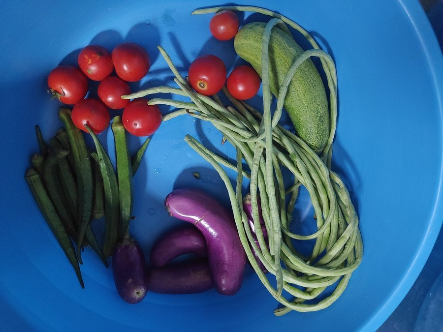

Choline and Brain Function: Why This Nutrient Matters
It's not a headline nutrient like omega-3 or vitamin D, but choline builds the actual chemical your brain uses to form memories. Most people don't get quite enough of it.

Key takeaways
- Choline builds acetylcholine, the neurotransmitter most directly tied to memory and learning.
- It's also structural, forming part of the membrane that surrounds every brain cell.
- Most adults fall short of the recommended daily amount, according to national dietary surveys.
- Eggs, meat, and fish are the richest everyday sources, with smaller amounts in soy and cruciferous vegetables.
- Pregnancy raises the need substantially, since choline supports fetal brain development.
Choline doesn't get nearly the attention that omega-3s or B vitamins do, yet it sits right at the center of how your brain makes and stores memories. It's classified as an essential nutrient, meaning your body can make a small amount on its own but not nearly enough to meet its needs, so the rest has to come from food. The catch is that most people don't quite hit the recommended intake, which makes it worth understanding what choline actually does and where to get more of it.
What does choline do for the brain?
Choline has two main jobs in the brain, and both matter for memory. First, it's the raw material for acetylcholine, a neurotransmitter that neurons use to communicate in circuits tied to learning, attention, and recall. Without enough choline on hand, the brain has less to work with when it needs to synthesize acetylcholine on demand. Second, choline is used to build phosphatidylcholine, a phospholipid that makes up a large share of the membrane surrounding every brain cell. That membrane isn't just packaging. It affects how efficiently a neuron can send and receive signals. Between the two roles, choline touches both the chemistry and the physical structure that memory depends on.
Is choline the same as citicoline or Alpha-GPC?
Not exactly, though they're related. Citicoline and Alpha-GPC are both choline-containing compounds sold as supplements, and both eventually break down in the body to release free choline, which is part of why they're marketed for brain support. Dietary choline from food is the base nutrient itself. If you're comparing the two supplement forms, our breakdown of Alpha-GPC vs citicoline covers how they differ in absorption and dosing. This article focuses on choline as a nutrient you get mainly through what you eat, which is the foundation either way.
Are most people getting enough choline?
Generally, no. The National Academies set an Adequate Intake of around 550 milligrams a day for men and 425 milligrams for women, higher during pregnancy and breastfeeding. National dietary survey data has repeatedly shown that a large share of adults in the United States fall below that target, even though outright choline deficiency is uncommon in people eating a normal, varied diet. The gap tends to show up more in people who eat little meat, fish, or eggs, since those are the most concentrated sources. It's a nutrient that's easy to underconsume quietly, without any obvious symptom pointing back to it.
COMPLEX
The memory formula we rate highest in 2026
Food comes first for choline. If your diet is light on eggs and meat, Advanced Memory Complex includes citicoline alongside bacopa and phosphatidylserine as daily support.
See Today's Price →What foods are highest in choline?
Egg yolks lead the list by a wide margin, which is why eggs show up so often in nutrition advice about brain health. Beef, chicken, and fish also carry meaningful amounts, and organ meats like liver are especially concentrated, though they're a less common part of most diets today. On the plant side, soybeans, tofu, cruciferous vegetables such as broccoli and Brussels sprouts, potatoes, and beans all contribute smaller but useful amounts. A simple way to think about it: if a meal includes eggs, fish, or soy, it's probably contributing real choline. A day built entirely around refined carbs and produce with little protein is more likely to fall short.
Does choline actually improve memory?
The honest answer is mixed. Choline is clearly necessary for normal brain function, and severe deficiency causes measurable problems, but that doesn't automatically mean more choline beyond an adequate intake makes memory sharper in someone who's already getting enough. Some trials in older adults with lower baseline intake have found modest cognitive benefits from choline-containing supplements, while other studies in well-nourished people show little added effect. Where the evidence is more consistent is during pregnancy, when choline supports the developing fetal brain and spinal cord, and researchers generally agree that intake below the recommended amount is worth correcting. For everyday adults, the safer framing is that choline is a nutrient to make sure you're not short on, rather than one to mega-dose in hopes of a big memory boost.
Who should pay closer attention to choline?
A few groups have a genuinely higher need or higher risk of falling short. Pregnant and breastfeeding people need more choline to support fetal and infant brain development, and several health organizations specifically flag this as a nutrient worth watching during those stages. Vegans and vegetarians, since the richest sources are animal foods, may need to plan more deliberately around soy, legumes, and cruciferous vegetables. People with certain liver conditions or genetic variations in choline metabolism may also need more than the average adult. If any of that applies to you, it's worth a conversation with a doctor or registered dietitian about whether your intake is where it should be, and whether a supplement makes sense on top of food. For a broader look at nutrients tied to memory and focus, see our roundup of the best vitamins and nutrients for brain fog, and our pillar guide on how to improve your memory for the full picture beyond any single nutrient.
Frequently asked questions
What does choline do for the brain?
Choline is a building block for acetylcholine, a neurotransmitter central to memory, learning, and muscle control. It also helps build the phospholipids that make up brain cell membranes, so it plays a structural role as well as a chemical one.
Am I getting enough choline?
Probably not quite enough. National dietary surveys suggest a large share of adults fall short of the recommended intake, which is set around 550 milligrams a day for men and 425 milligrams for women. Most people get some choline from a normal diet, just often not the full recommended amount.
What foods are highest in choline?
Egg yolks are one of the most concentrated everyday sources, followed by liver, beef, fish, and poultry. Plant sources include soybeans, cruciferous vegetables like broccoli and Brussels sprouts, potatoes, and beans, though generally in smaller amounts than animal foods.
Should I take a choline supplement?
For most people eating a varied diet with eggs, meat, or fish, food alone can meet needs. A supplement may help those who eat little animal protein, are pregnant or breastfeeding, or simply want extra support, but it's worth talking to a doctor first, especially at higher doses.
Want to close the gap beyond diet alone?
Food should come first for choline. See the memory formulas our editors rate highest for 2026 if you want extra daily support.
See the Top 5 Memory Formulas →Related: Citicoline for memory · Alpha-GPC vs citicoline · How to improve your memory · Best memory formulas of 2026